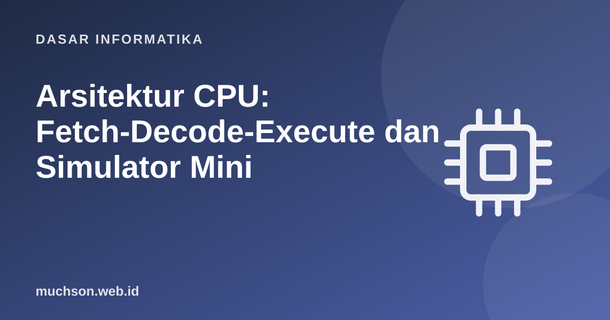

Beranda › Artikel › Dasar Informatika
Dasar InformatikaArsitektur CPU: Fetch-Decode-Execute dan Simulator Mini
Prosesor, di balik semua keajaibannya, melakukan hal yang sangat sederhana berulang miliaran kali per detik: ambil instruksi, tafsirkan, jalankan. Dengan membangun simulator CPU mini 20-an baris, Anda akan melihat bagaimana program, memori, dan register bekerja sama, dan mengapa bahasa assembly seperti itu.
Sebaiknya sudah paham: sistem bilangan, logika boolean

Setelah membaca dan mencoba materi ini, Anda mampu:
- menjelaskan arsitektur von Neumann: CPU, memori, bus
- menyebut fungsi register, program counter, dan instruction register
- menjelaskan siklus fetch-decode-execute
- membaca dan menulis program assembly sederhana untuk CPU mini
- menghubungkan konsep dengan CPU nyata: pipeline, cache, multi-core
Arsitektur von Neumann
| Komponen | Fungsi |
|---|---|
| Program Counter (PC) | Menyimpan alamat instruksi berikutnya |
| Instruction Register (IR) | Menyimpan instruksi yang sedang dijalankan |
| Register | Penyimpanan kecil dan sangat cepat di dalam CPU |
| ALU | Melakukan operasi aritmetika dan logika |
| Control Unit | Mendekode instruksi dan mengatur aliran data |
| Bus | Jalur data, alamat, dan kendali antara CPU dan memori |
Siklus fetch-decode-execute
Simulator CPU mini
Kita rancang CPU sederhana dengan 4 register dan delapan instruksi. Setiap instruksi adalah tuple (operasi, operan...). Program berikut menjumlahkan 1 sampai 5.
| Instruksi | Arti |
|---|---|
| LOAD Rn, nilai | Isi register Rn dengan nilai langsung |
| ADD Rn, Rm | Rn ← Rn + Rm |
| SUB Rn, nilai | Rn ← Rn − nilai |
| JNZ Rn, alamat | Lompat ke alamat bila Rn ≠ 0 |
| PRINT Rn | Cetak isi Rn |
| HALT | Berhenti |
def jalankan(program, jejak=False, batas=1000):
R = {"R0": 0, "R1": 0, "R2": 0, "R3": 0}
PC, langkah = 0, 0
while langkah < batas:
instruksi = program[PC] # FETCH
PC += 1 # PC menunjuk instruksi berikutnya
op, *operan = instruksi # DECODE
langkah += 1
if op == "LOAD": R[operan[0]] = operan[1] # EXECUTE
elif op == "ADD": R[operan[0]] += R[operan[1]]
elif op == "SUB": R[operan[0]] -= operan[1]
elif op == "JNZ":
if R[operan[0]] != 0: PC = operan[1]
elif op == "PRINT": print("keluaran:", R[operan[0]])
elif op == "HALT": break
if jejak: print(f" langkah {langkah:>2}: {instruksi!s:<22} PC={PC:<2} {R}")
return R, langkah
program = [
("LOAD", "R0", 0), # 0: jumlah = 0
("LOAD", "R1", 5), # 1: pencacah = 5
("ADD", "R0", "R1"), # 2: jumlah += pencacah
("SUB", "R1", 1), # 3: pencacah -= 1
("JNZ", "R1", 2), # 4: ulangi selama pencacah != 0
("PRINT", "R0"), # 5: cetak jumlah
("HALT",), # 6
]
R, n = jalankan(program, jejak=True)
print("selesai dalam", n, "instruksi; R0 =", R["R0"], "(1+2+3+4+5 = 15)") langkah 1: ('LOAD', 'R0', 0) PC=1 {'R0': 0, 'R1': 0, 'R2': 0, 'R3': 0}
langkah 2: ('LOAD', 'R1', 5) PC=2 {'R0': 0, 'R1': 5, 'R2': 0, 'R3': 0}
langkah 3: ('ADD', 'R0', 'R1') PC=3 {'R0': 5, 'R1': 5, 'R2': 0, 'R3': 0}
langkah 4: ('SUB', 'R1', 1) PC=4 {'R0': 5, 'R1': 4, 'R2': 0, 'R3': 0}
langkah 5: ('JNZ', 'R1', 2) PC=2 {'R0': 5, 'R1': 4, 'R2': 0, 'R3': 0}
langkah 6: ('ADD', 'R0', 'R1') PC=3 {'R0': 9, 'R1': 4, 'R2': 0, 'R3': 0}
langkah 7: ('SUB', 'R1', 1) PC=4 {'R0': 9, 'R1': 3, 'R2': 0, 'R3': 0}
langkah 8: ('JNZ', 'R1', 2) PC=2 {'R0': 9, 'R1': 3, 'R2': 0, 'R3': 0}
langkah 9: ('ADD', 'R0', 'R1') PC=3 {'R0': 12, 'R1': 3, 'R2': 0, 'R3': 0}
langkah 10: ('SUB', 'R1', 1) PC=4 {'R0': 12, 'R1': 2, 'R2': 0, 'R3': 0}
langkah 11: ('JNZ', 'R1', 2) PC=2 {'R0': 12, 'R1': 2, 'R2': 0, 'R3': 0}
langkah 12: ('ADD', 'R0', 'R1') PC=3 {'R0': 14, 'R1': 2, 'R2': 0, 'R3': 0}
langkah 13: ('SUB', 'R1', 1) PC=4 {'R0': 14, 'R1': 1, 'R2': 0, 'R3': 0}
langkah 14: ('JNZ', 'R1', 2) PC=2 {'R0': 14, 'R1': 1, 'R2': 0, 'R3': 0}
langkah 15: ('ADD', 'R0', 'R1') PC=3 {'R0': 15, 'R1': 1, 'R2': 0, 'R3': 0}
langkah 16: ('SUB', 'R1', 1) PC=4 {'R0': 15, 'R1': 0, 'R2': 0, 'R3': 0}
langkah 17: ('JNZ', 'R1', 2) PC=5 {'R0': 15, 'R1': 0, 'R2': 0, 'R3': 0}
keluaran: 15
langkah 18: ('PRINT', 'R0') PC=6 {'R0': 15, 'R1': 0, 'R2': 0, 'R3': 0}
selesai dalam 19 instruksi; R0 = 15 (1+2+3+4+5 = 15)
Dari sini ke CPU nyata
| Konsep | Arti | Mengapa penting |
|---|---|---|
| Set instruksi (ISA) | Kumpulan instruksi yang dipahami CPU (x86-64, ARM, RISC-V) | Antarmuka antara perangkat lunak dan keras |
| Pipeline | Beberapa instruksi pada tahap berbeda sekaligus | Meningkatkan kecepatan tanpa menaikkan clock |
| Cache | Memori kecil dan cepat dekat CPU | Mengurangi penantian memori utama yang lambat |
| Multi-core | Beberapa inti dalam satu chip | Paralelisme; menuntut program yang konkuren |
| Clock | Denyut yang menyinkronkan operasi (GHz) | Bukan satu-satunya penentu kecepatan; IPC juga penting |
Bahasa tingkat tinggi seperti Python atau Java akhirnya diterjemahkan menjadi instruksi serupa yang dijalankan CPU, langsung (dikompilasi) atau lewat penerjemah dan mesin virtual. Memahami siklus ini menjelaskan mengapa perulangan, pemanggilan fungsi, dan akses memori memiliki biaya.
1. Tulis program CPU mini untuk menghitung 3 × 4 dengan penjumlahan berulang.
2. Berapa instruksi dijalankan program penjumlahan 1..5 di atas?
3. Mengapa memori yang dibagi untuk program dan data dapat menjadi masalah keamanan?
4. Tambahkan instruksi MUL ke simulator: apa yang perlu diubah?
- Von Neumann: CPU, memori, bus; program dan data di memori yang sama.
- Siklus: fetch, decode, execute; PC menunjuk instruksi berikutnya.
- Perulangan dan percabangan adalah lompat bersyarat yang mengubah PC.
- CPU nyata menambah pipeline, cache, multi-core, dan ISA yang kaya.
Tanya jawab
Apa itu assembly?
Apa bedanya 32 bit dan 64 bit?
Mengapa clock tidak terus naik?
Referensi
- David Patterson dan John Hennessy, Computer Organization and Design (Morgan Kaufmann)
- Andrew Tanenbaum dan Todd Austin, Structured Computer Organization (Pearson)
- Harvard CS50: Introduction to Computer Science (Week 0 dan 1)
- Nisan dan Schocken, The Elements of Computing Systems (nand2tetris), MIT Press